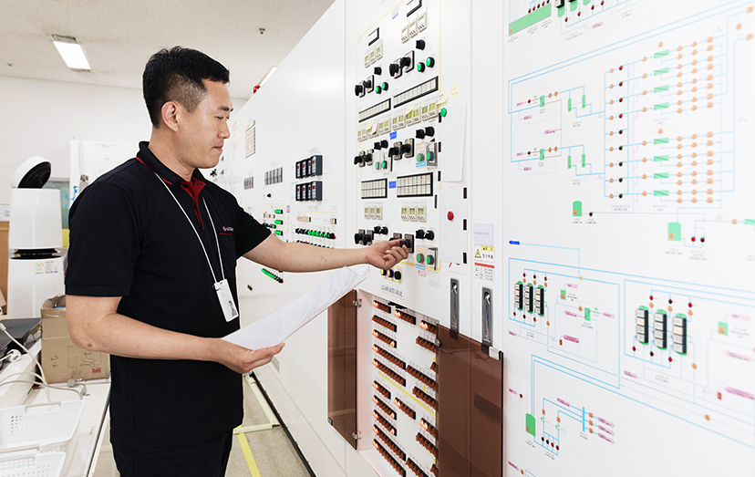

P-OLED는 자동차 업계에서 가장 주목받고 있는 차량용 디스플레이 패널입니다. LG디스플레이는 세계 최초로 차량용 P-OLED 개발에 성공한 데 이어, 이제는 그 노력의 결실을 하나씩 거두는 단계로 돌입했습니다.
고객가치 최우선이 우리 팀의 모토
올해부터 본격적으로 차량용 P-OLED 양산을 시작한 것인데요. 글로벌 프리미엄 완성차 업체들을 고객사로 확보하는 한편, 이들과의 공동 개발을 진행하고 있습니다. P-OLED는 자동차 업계에서 가장 주목 받고 있는 차량용 디스플레이 패널입니다. 유리가 아닌 플라스틱을 기판소재로 사용해, 구부리거나 휘는 등 형태 변화가 자유롭다는 것이 P-OLED의 가장 큰 특징인데요. 따라서, 운전자의 시야에 맞게 휘어진 커브드(Curved) 디스플레이를 구현할 수 있습니다. 또한 P-OLED는 곡면으로 이뤄진 차내에 가장 잘 어우러지는 디자인을 구현할 수 있다는 점에서 미래 지향적인 차량 디스플레이로 각광받고 있습니다.
P-OLED의 장점은 이뿐만이 아닙니다. P-OLED는 OLED 특유의 초고화질을 그대로 보여주는데요. 픽셀 하나하나가 빛을 내기 때문에 깊이감 있는 ‘완벽한 블랙’을 구현할 수 있어, LCD 대비 한층 고급스럽게 색을 재현합니다. 곧 다가올 자율주행시대에는 차량 디스플레이로 영화, 드라마 등 다양한 엔터테인먼트 콘텐츠를 즐기는 시간이 더욱 늘어날 것으로 예상되는데요. P-OLED의 압도적인 화질은 좁은 차량 안에서도 실감나는 화면을 누릴 수 있게 해줍니다.

시인성이 높고 시야각이 압도적으로 넓다는 점 또한 강점으로 꼽히는데요. 운전자가 어떤 상황에서도 디스플레이 정보를 정확하게 볼 수 있기 때문에, 높은 안전 기준이 요구되는 차량용 디스플레이로써 적합한 성능을 갖췄습니다. 또한 LG디스플레이의 차량용 P-OLED는 영하 30도에서부터 영상 95도에 이르는 극한의 온도에도 정상적으로 작동합니다. 덕분에 계절에 따라 온도 변화가 심한 차량 내부 환경에서도 안전하게 이용할 수 있습니다.
LG디스플레이의 차량용 P-OLED 패널은 ‘눈이 편한 디스플레이’로 인정 받기도 했는데요. 글로벌 기술평가 기관인 TUV라인란드는 LG디스플레이 P-OLED 패널에 대해 ‘아이 컴포트 디스플레이(Eye Comfort Display)’ 인증을 부여했습니다. LG디스플레이의 차량용 P-OLED는 빛 반사도, 블루라이트 방출량, 화질 등 세 가지 항목으로 진행된 인증 테스트에서 모두 기준치를 충족했습니다.
세상 모든 자동차에 P-OLED 전파를!
LG디스플레이는 LCD 대비 성능이 뛰어난 P-OLED를 활용한 차량용 디스플레이 제품 개발에 꾸준히 앞장서왔는데요. 세계 최초로 차량용 P-OLED 개발에 성공한
데 이어, 이제는 그 노력의 결실을 하나씩 거두는 단계로 돌입했습니다. 올해부터 본격적으로 차량용 P-OLED 양산을 시작한 것인데요. 글로벌 프리미엄 완성차
업체들을 고객사로 확보하는 한편, 이들과의 공동 개발을 진행하고 있습니다.
이제 막 시장이 형성된 차량용 OLED 패널은 향후 성장 가능성이 매우 높은 제품군으로 지목됩니다. 글로벌 시장조사기관 옴디아에 따르면, 글로벌 차량용 OLED 패널
시장은 2020년 5,700만 달러 수준에서 오는 2025년 7억8,000만 달러로 10배 이상 급성장할 전망입니다.
댓글쓰기
*비밀댓글로 작성자와 관리자만 볼 수 있습니다.